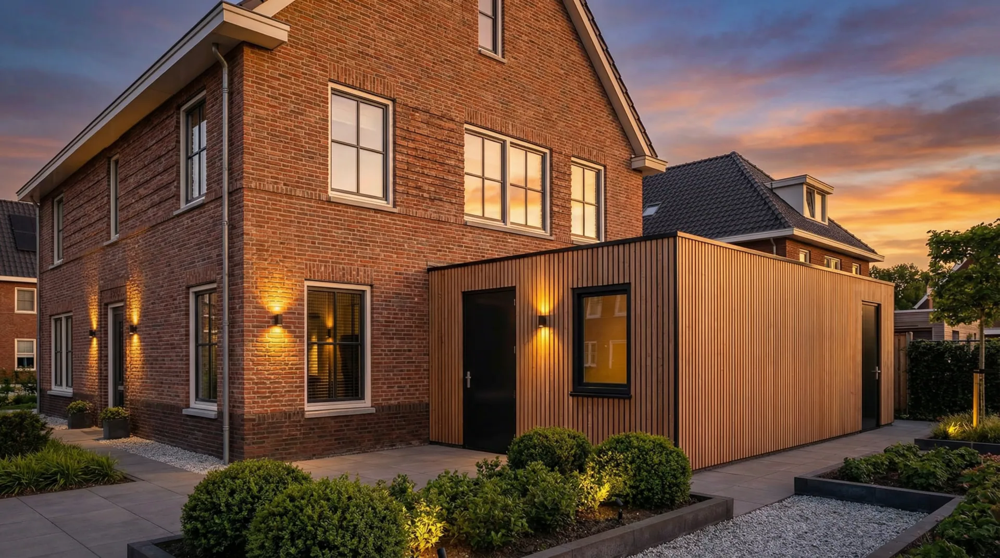
Aanbouw
Meer ruimte zonder te verhuizen. Gelijke vloerhoogte, doorlopend daglicht en een gevel die de lijn van uw woning netjes doortrekt.
Bouwbedrijf in Culemborg en de Betuwe
Aanbouw, veranda, overkapping of buitenverblijf. Wij tekenen het, maken het in eigen werkplaats en bouwen het met ons eigen team. Op maat van uw huis, nooit uit een catalogus.
4,9 uit 30 Google-reviews
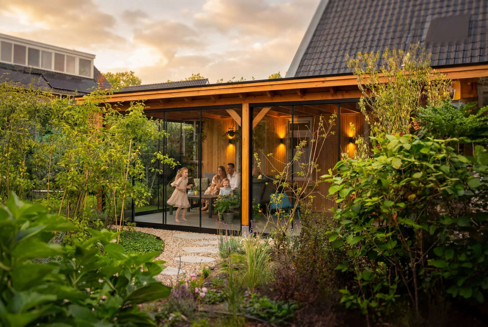
Beus Bouw ontwerpt en bouwt voor mensen die hun woning willen uitbreiden of van hun tuin een plek willen maken waar ze echt zitten. Elk plan volgt de maten en details van uw huis.
Wanden en dakelementen maken wij zelf in onze werkplaats in Culemborg. De montage doet ons eigen team. Ontwerp, productie en bouw blijven in dezelfde handen, en u heeft van het eerste bezoek tot de nazorg één vast aanspreekpunt.
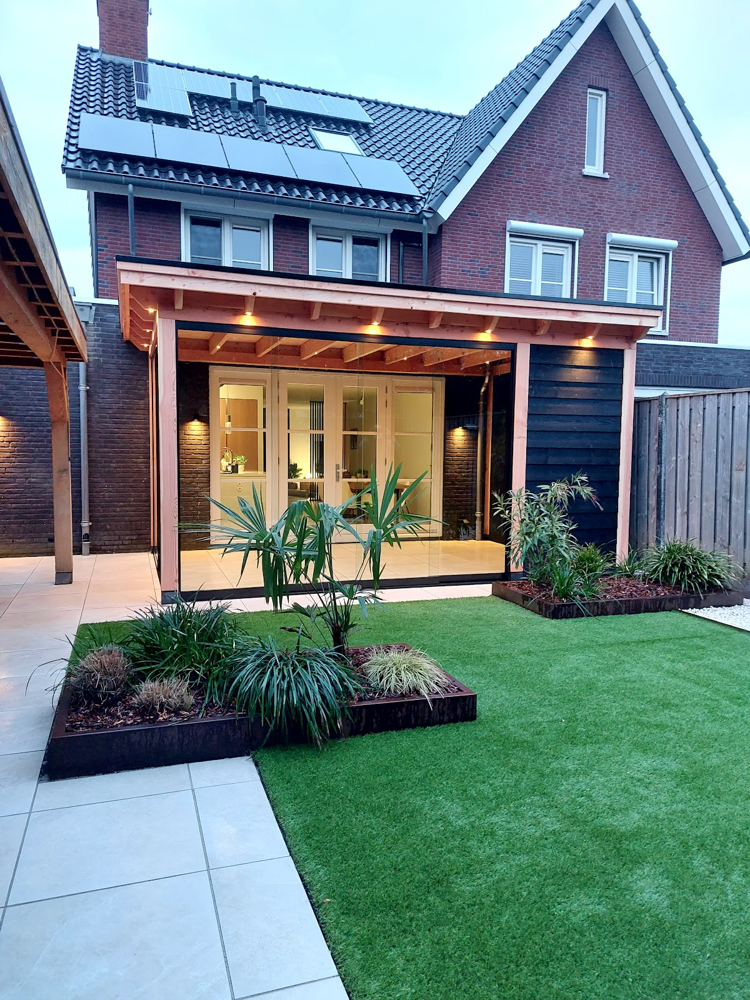
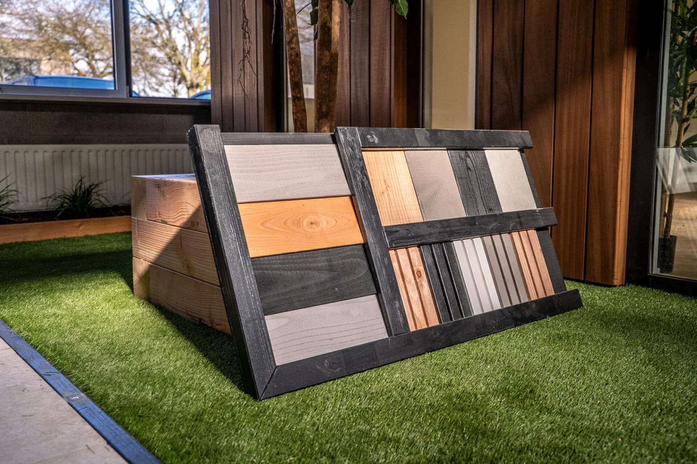
Elk project begint bij uw woning, uw tuin en hoe u die gebruikt. Vergunning, constructieberekening en fundering regelen wij er gewoon bij.

Meer ruimte zonder te verhuizen. Gelijke vloerhoogte, doorlopend daglicht en een gevel die de lijn van uw woning netjes doortrekt.
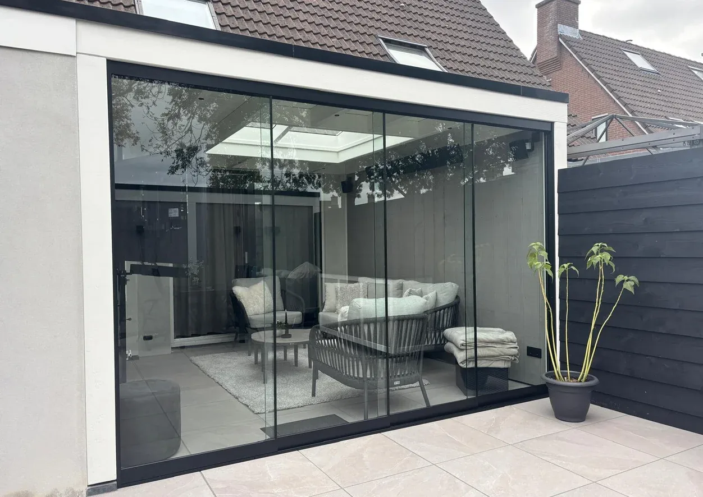
Droog zitten in maart, schaduw in juli en met glazen schuifwanden ook in oktober nog een luwe plek.
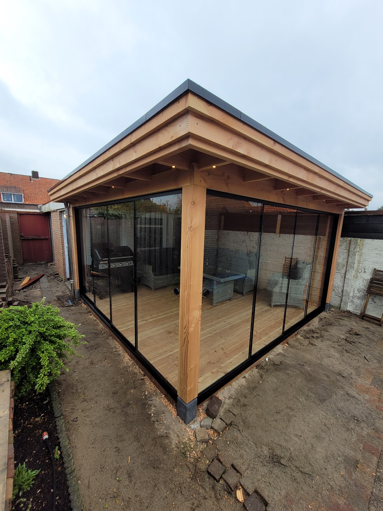
Een vaste, droge plek voor de loungehoek, de auto, de fietsen of het haardhout. In douglas, lariks of eiken.
Een volwaardige werkplek los van het huis. Geïsoleerd, stil, warm in de winter en koel in de zomer. Elektra, data en ventilatie regelen wij.
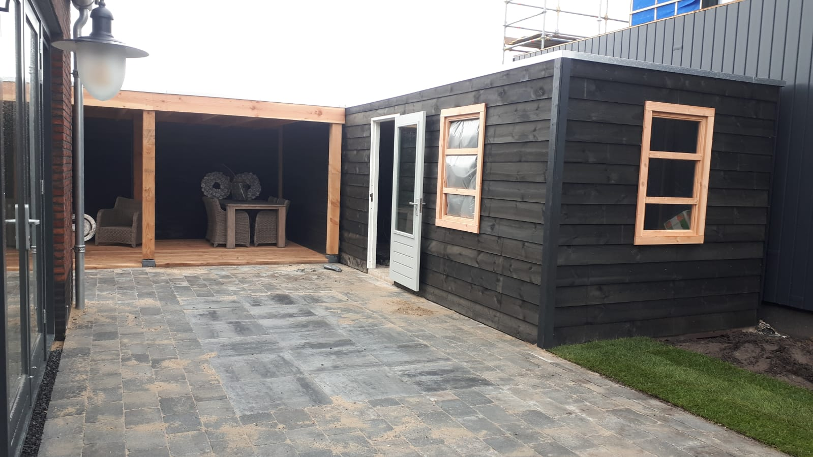
Berging, hobbyruimte of tuinkamer, met dezelfde detaillering als een aanbouw. Ook over tien jaar nog netjes.
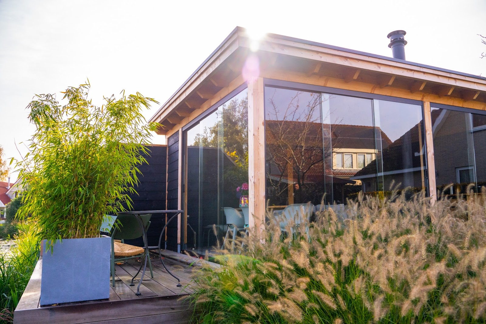
Een tweede woonkamer, maar dan buiten. Loungen, koken en opbergen onder één dak, met glazen schuifwanden die de ruimte het hele jaar bruikbaar maken.
Bespreek uw plan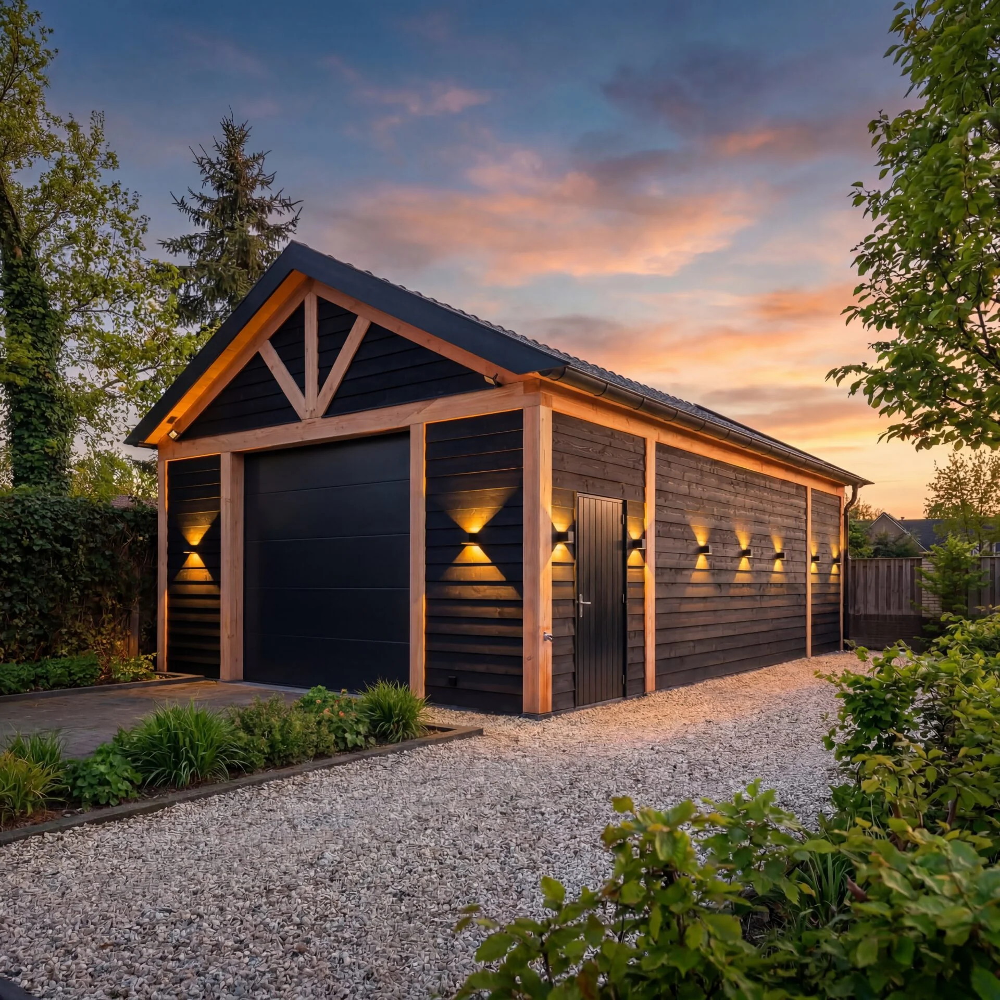
"Kevin heeft mijn schuur gebouwd wat een mooie Mancave is geworden."
Een vast team en een eigen werkplaats. U hoeft zelf geen partijen aan elkaar te knopen en belt steeds met dezelfde persoon.
Plan een gesprek: 06 22 11 78 33We kijken naar uw huis, uw tuin en wat u ermee wilt. Liever eerst materialen zien? Dat kan in Waardenburg.
Materialen, maten en werkzaamheden staan er per onderdeel in. Zo ziet u waar het geld naartoe gaat en kunt u zelf schuiven.
Is er een omgevingsvergunning nodig, dan maken wij de bouwtekeningen en de constructieberekening en regelen wij het contact met de gemeente.
Wanden en dakelementen bereiden we voor in Culemborg. Daardoor blijft de bouwtijd bij u thuis kort.
Ons eigen team doet het grondwerk, de fundering, de montage en de afwerking tot in de details. Na de oplevering blijven we bereikbaar.
★★★★★
"Extra overkaping aan het huis, tegelwerk, kunstgras, grind en plantenbak laten verzorgen door Beus Bouw. Goede communicatie en snel antwoord. Denken goed mee en zijn niet te beroerd om extra werk aan te pakken. Heel erg tevreden met onze tuin."
★★★★★
"Wij zijn erg blij met onze overkapping, een mooie verlenging van het huis. De communicatie verliep fijn en snel, de afwerking is netjes en ze leveren goede services!"
★★★★★
"Fijne communicatie zowel via mail, telefonisch als via de app. Klus is goed gepland en uitgevoerd door de tuinmannen de de Beus Bouw. Zelfs extra werkzaamheden hebben ze zonder problemen op zich genomen alles was op tijd af. Een klemmende deur is achteraf prima en direct opgelost. We genieten van een veranda en schuur"
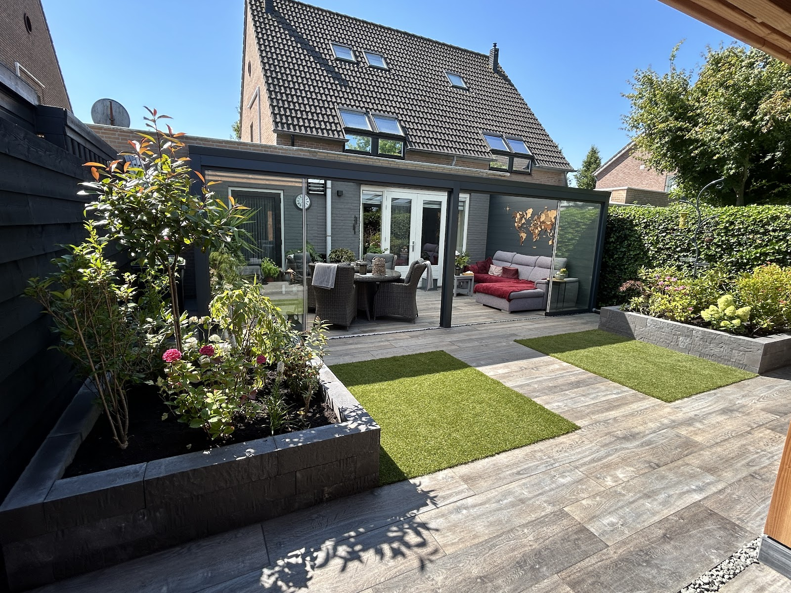
★★★★★
"Beus Bouw heeft onze hele tuin leeg gehaald en alles keurig afgevoerd, en daarna een mooie overkapping met schuur, 2 verhoogde bloembakken en nieuwe schutting en poort geplaatst.
Ze hebben ook alles keurig betegeld met de mooie hout look tegels ( ook in de reeds bestaande aluminium veranda die we al hadden).
Michel,"
4,9
uit 30 reviews op Google
9,0
uit 113 reviews op Trustoo
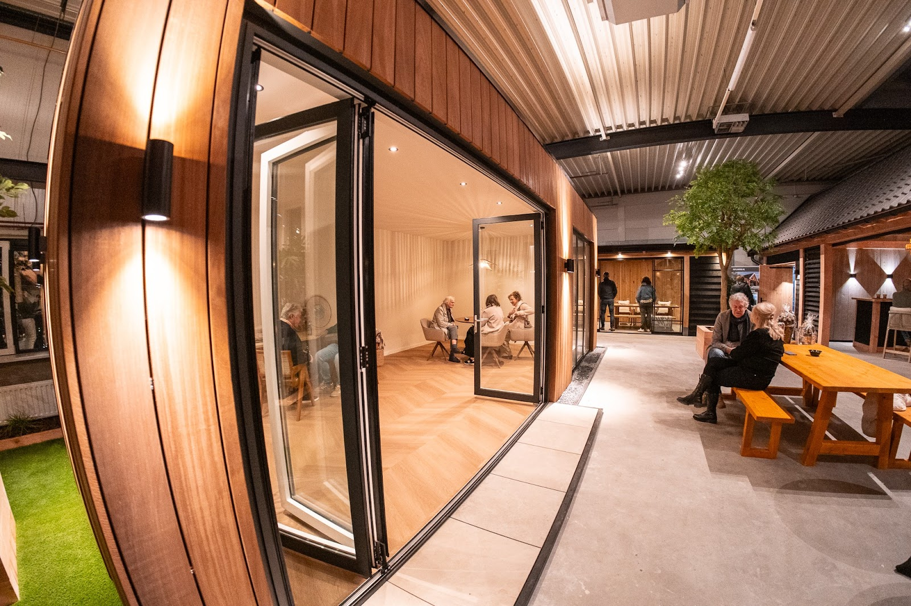
In onze showroom in Waardenburg staan complete opstellingen en materiaalmonsters. U vergelijkt houtsoorten, kleuren en afwerkingen naast elkaar en ziet hoe een detail in het echt uitpakt.
Ringweistraat 5, Waardenburg
Bezoek op afspraak
Bellen kan ook gewoon, van maandag tot en met zaterdag vanaf 6 uur 's ochtends. Op een bericht reageren wij binnen één werkdag.
Bel direct06 22 11 78 33 Mailinfo@beusbouw.nlParallelweg West 11
4104 AX Culemborg
Ringweistraat 5
Waardenburg (op afspraak)
| ma t/m za | 06:00 tot 20:00 |
| zondag | gesloten |
Vanuit Culemborg werken wij door de hele Betuwe en het Rivierengebied: Culemborg, Geldermalsen, Zaltbommel, Tiel, Beesd, Buren, Meteren, Waardenburg en de dorpen en buitengebieden daaromheen. Woont u net buiten dit gebied? Bel gerust, in het eerste gesprek is snel duidelijk of wij uw plan goed kunnen uitvoeren.